Part 1.1: Convolutions from Scratch
Both versions start by flipping the kernel, which is what makes this convolution instead of correlation (it matters here b/c flipping changes the sign for $D_x$ and $D_y$). Then I zero-pad each side by kernel_size // 2 so the output is the same size as the input. The four-loop version uses two loops over every output pixel and two more over the kernel entries, multiplying and adding one pixel at a time. The two-loop version keeps the outer loops, but grabs the whole window at once and computes np.sum(window * kernel) in one numpy call.
def pad_zeros(img, ph, pw):
h, w = img.shape
padded = np.zeros((h+ 2*ph, w + 2*pw))
padded[ph: ph + h, pw: pw + w] = img
return padded
def convolution_four_loops(img, kernel):
kernel = np.flip(kernel)
kh, kw = kernel.shape
ph, pw = kh//2, kw // 2
padded = pad_zeros(img, ph, pw)
h, w = img.shape
out = np.zeros((h, w))
for i in range(h):
for j in range(w):
total = 0.0
for m in range(kh):
for n in range(kw):
total += padded[i + m, j + n] * kernel[m, n]
out[i, j ] = total
return out
def convolution_two_loops(img, kernel):
kernel = np.flip(kernel)
kh, kw = kernel.shape
ph, pw = kh//2, kw // 2
padded = pad_zeros(img, ph, pw)
h, w = img.shape
out = np.zeros((h, w))
for i in range(h):
for j in range(w):
window = padded[i: i + kh, j: j + kw]
out[i, j] = np.sum(window * kernel)
return outFor the 9x9 box filter, two loops is about 9x faster than four loops (0.39s vs 3.61s), since numpy does all 81 multiplications at once in compiled code. For $D_x$ and $D_y$ it flips: four loops is actually faster (0.18s vs 0.38s), b/c with only 3 kernel entries, the overhead of calling numpy on every pixel outweighs what it saves. scipy beats both by 20 to 200x since it has no Python loops at all. Full numbers on the 600x450 selfie:
| Filter | Four loops | Two loops | scipy.signal.convolve2d | Max diff vs scipy |
|---|---|---|---|---|
| 9x9 box | 3.61s | 0.39s | 0.019s | ~4.8e-13 (four loops), ~1.7e-13 (two loops) |
| D_x | 0.18s | 0.38s | 0.0022s | 0.0 |
| D_y | 0.20s | 0.38s | 0.0031s | 0.0 |
For boundaries, I use zero padding, same as scipy's boundary='fill', fillvalue=0. You can actually see the effect of this in the box-blurred selfie below! There is a faint dark frame around the edges, as part of the 9x9 window falls on zeros near the border, dragging the average down.
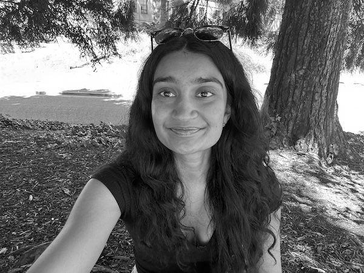
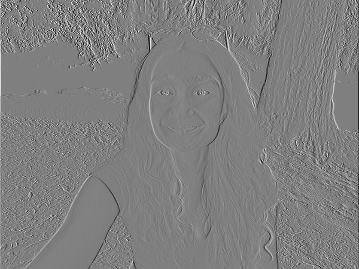
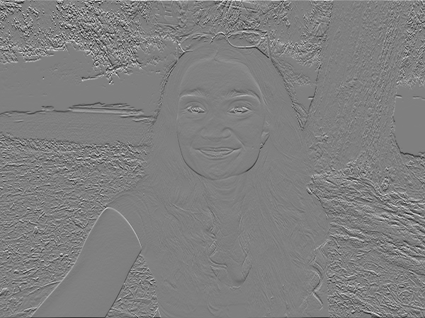
Part 1.2: Finite Difference Operator
$D_x$ picks up vertical edges, which are the places where brightness changes from left to right. $D_y$ does the same for horizontal edges, where brightness changes from the top to bottom. Combining them gives the gradient magnitude, which is the edge strength in any direction regardless of orientation: $$G = \sqrt{\left(\frac{\partial I}{\partial x}\right)^2 + \left(\frac{\partial I}{\partial y}\right)^2}$$ Additionally, the white line running around the border of the output is caused by the zero padding. This is where the jump from real image values down to 0 looks exactly like an edge to the filter.

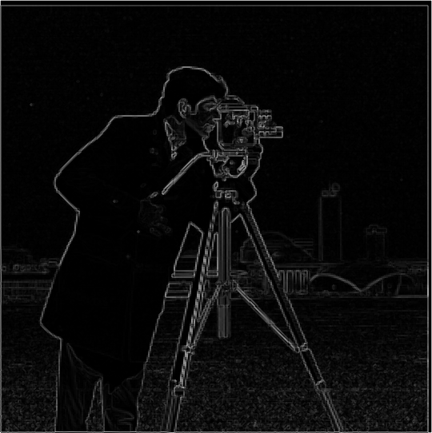
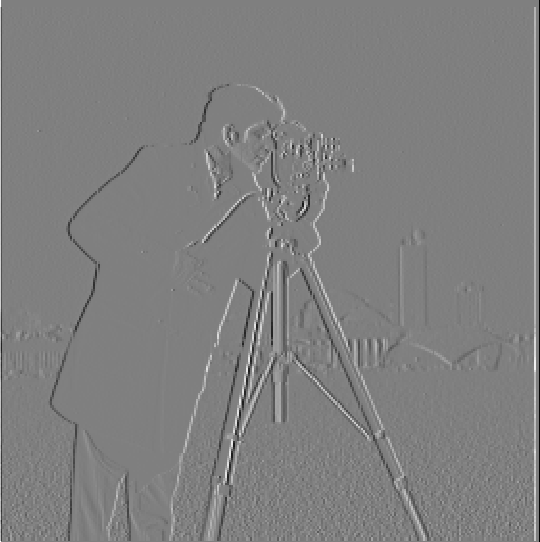
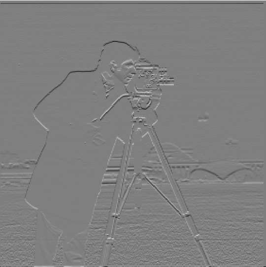
I tried a handful of thresholds: 50, 70, 73, 75, 78, 90. At 50, the grass texture shows up as white specks across the whole lawn (noise, not edges). At 90, real edges start disappearing, like the background buildings and parts of the tripod legs. 75 was the best tradeoff b/c the specks are almost entirely gone, and the man, camera, tripod, and buildings are all still visible. From this question, I learned that I can't fully catch every edge and remove all the noise at once.
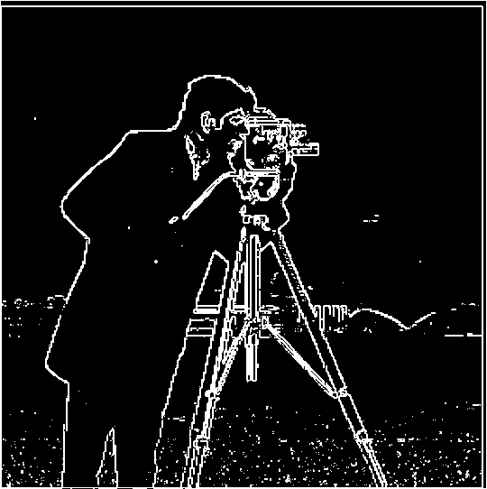
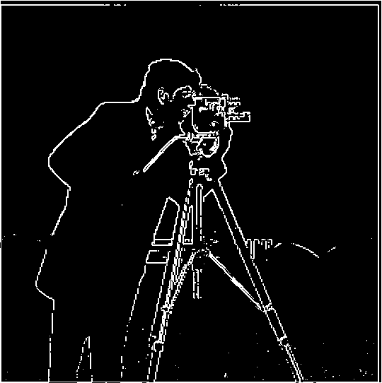
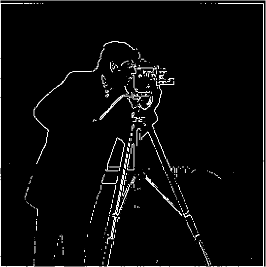
Part 1.3: Derivative of Gaussian (DoG) Filter
For the Gaussian, I used getGaussianKernel(11, 1.5) and took the outer product with its own transpose to get a 2D kernel. The size needs to be at least 6σ (9) to cover the whole bell curve, and odd so there's an actual center pixel (an even size shifts the result by half a pixel), so I went with 11. Blurring first removes the grass noise entirely, and the edges come out thicker, smoother, and more continuous, so the tripod and outline no longer break up into little pieces. Blurring also weakens the gradients (the max drops from about 360 to 216), so I lowered the threshold to 30.
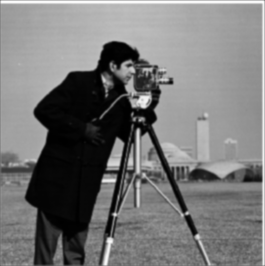
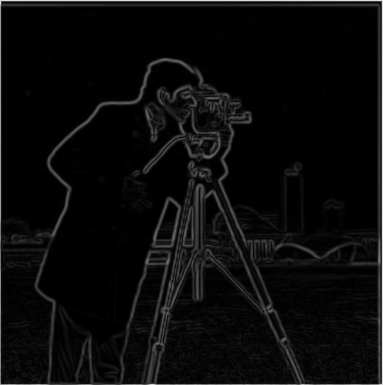
The DoG filters are the Gaussian convolved with $D_x$ and $D_y$ (in "full" mode so neither filter gets cut off). Each one looks like a bright blob next to a dark blob, basically a smooth version of [1, 0, -1]. Now edge detection is a single convolution on the original image, instead of blurring and then taking the derivative separately.
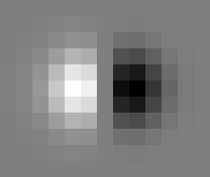
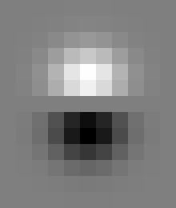
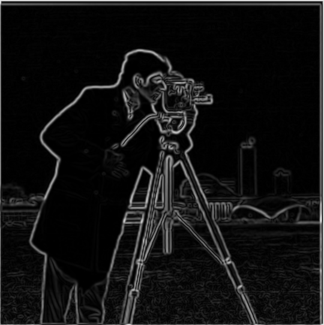
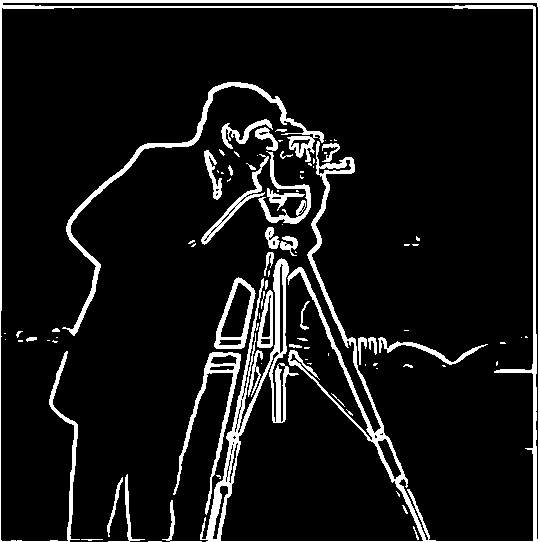
To verify, I compared the two outputs: the max difference is 2.56e-13 ignoring the 1-pixel border, so they're the same, b/c convolution is associative: $(I * G) * D_x = I * (G * D_x)$. The 93.58 difference over the whole image comes only from that border, since blurring first cuts the image off at its edge before $D_x$ is applied. Compared to plain finite differences, DoG gives much less noise and cleaner edges, b/c it compares weighted neighborhoods instead of single pixels.
Part 2.1: Image "Sharpening"
A Gaussian blur is a low-pass filter, so image minus blur gives you the high frequencies (edges and texture), shown in the "high frequencies" image below. Sharpening adds some multiple of those high frequencies back on top of the original: $$f + \alpha(f - f * g)$$ which folds into a single filter, $$f * \big((1+\alpha)e - \alpha g\big)$$ where $e$ is the impulse: a single 1 in the middle, zero everywhere else. I used size 9, σ 1.5, applied separately to each color channel, with mirror padding at the edges to avoid a bright border artifact.

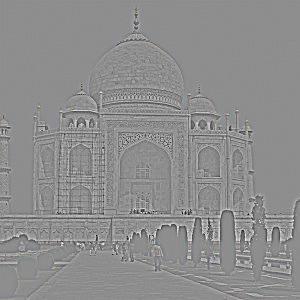
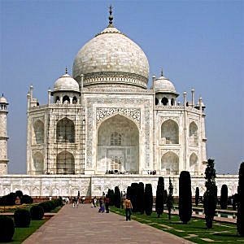
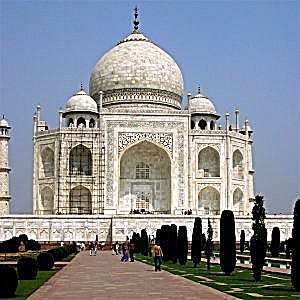
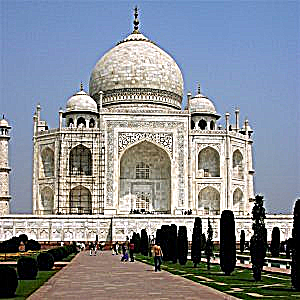
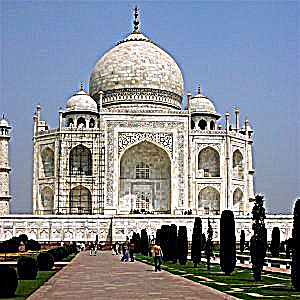
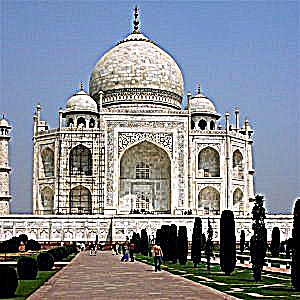
The Capitol photo is my own DSLR shot, with a shallow depth of field (sharp foreground & soft background). Sharpening makes the grass, flowers, and ledge texture noticeably crisper, and the dome's columns become more visible but stay soft, b/c sharpening can't add detail the lens never captured. Across α, 1 is subtle, 2 looks best, and by 3-5 halos appear around edges, the sky turns grainy, and the foliage looks crunchy, since the noise gets amplified too.
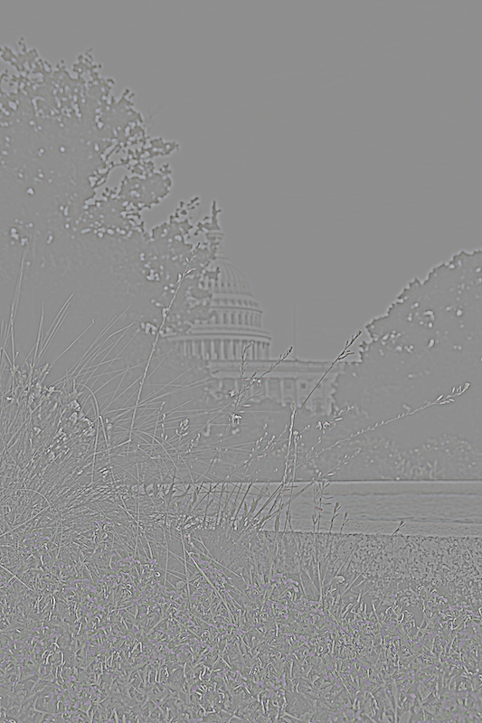
I reused my selfie from Part 1.1, this time in color, as the sharp image. I blurred it with the same Gaussian, then re-sharpened it at a few different α.
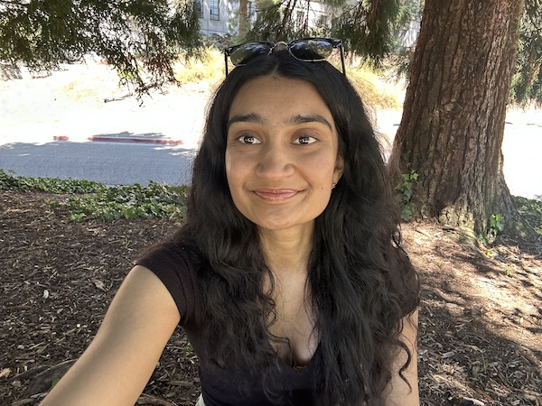
Mean absolute difference from the original: blurred 12.96, resharpened α=1 11.69, α=2 11.10 (closest), α=5 12.85 (worse again, overshooting). The outlines look crisp again, but the fine texture, like the leaves and my hair strands, doesn't come back. Sharpening can only boost the high frequencies that survived the blur, & it can't recreate what the blur destroyed.
Part 2.2: Hybrid Images
To make a hybrid image, I low-pass (Gaussian blur) the "far" image and high-pass (image minus blur) the "close" image, then add them together. Up close, the high frequencies dominate; from far away, only the low frequencies survive. For alignment, I used the provided starter code: I click both eyes on each image, and it shifts, scales, & rotates them so the eyes line up, then crops both to the same size (the black corners come from that rotation). Everything's done in grayscale (except the color versions at the end), and the blur uses FFT convolution for speed, with mirror padding at the edges.
Glinda + Elphaba is my favorite result b/c I love musicals!! Elphaba is the low-pass image b/c her hat and dark outfit are big, bold shapes that survive blurring, while Glinda's lashes and hair are fine detail that suits the high-pass. I started at σ_high 6 / σ_low 8, and Glinda overpowered everything, with Elphaba barely visible. Lowering σ_high to 3 keeps only Glinda's sharpest edges, so Elphaba's hat and silhouette show through from far away. In the FFTs, both inputs have energy at all frequencies, the low-pass keeps only the bright center (the low frequencies), the high-pass removes the center, and the hybrid has both.
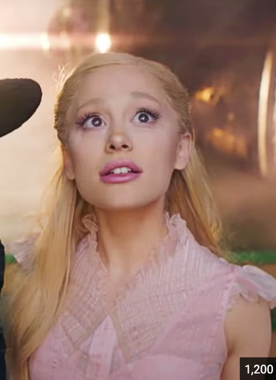
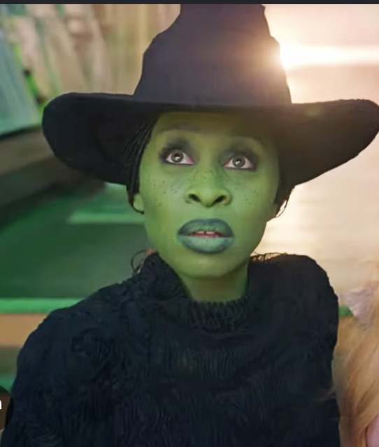
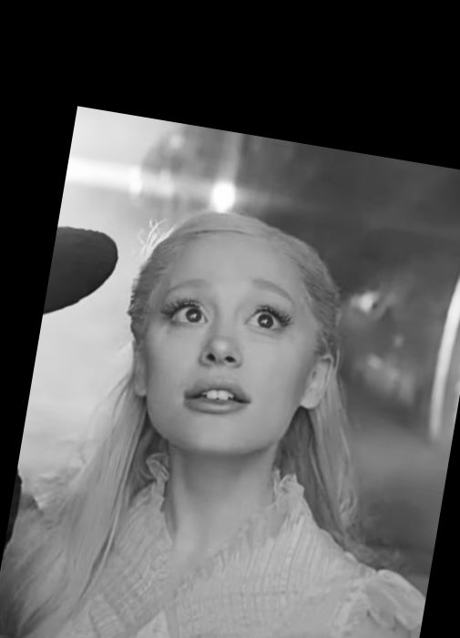
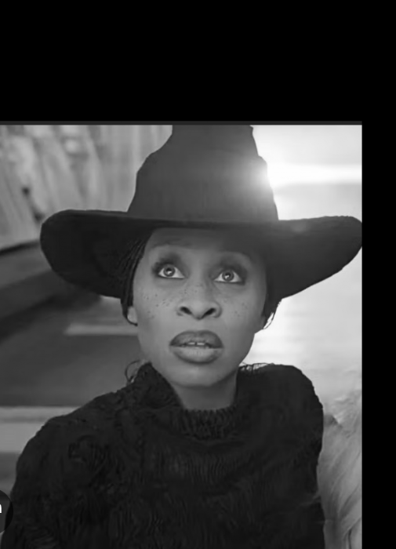
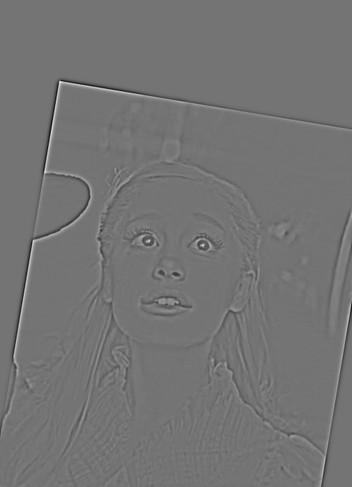
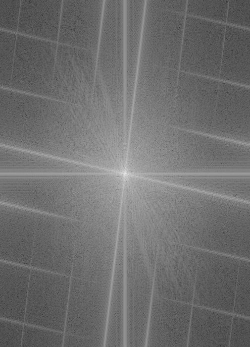
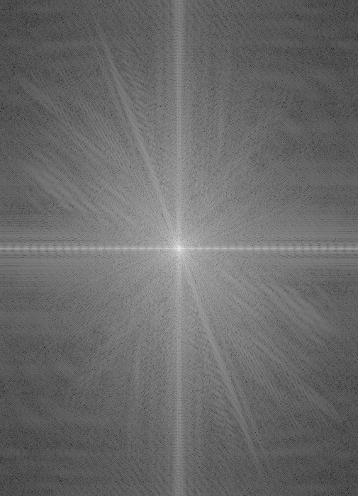
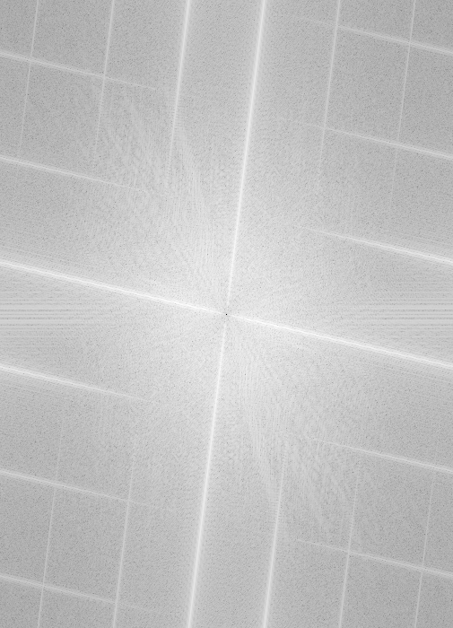
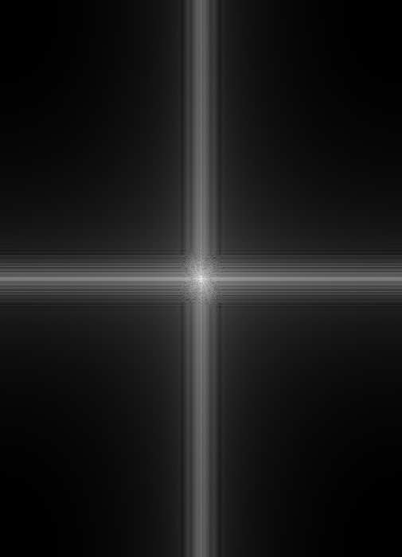
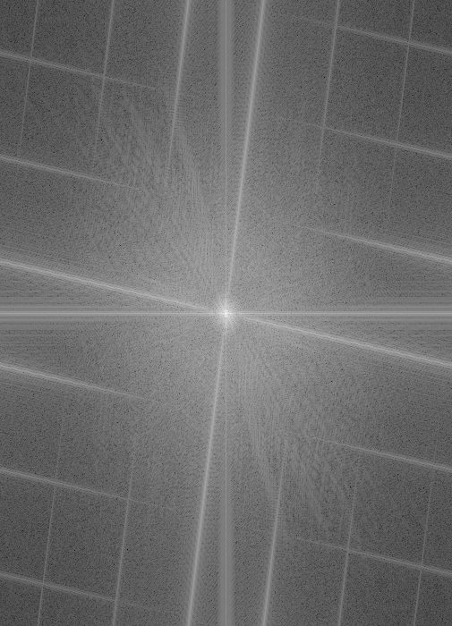
This was the provided sample pair, σ 6 / 8. The cat's whiskers and fur are strong fine detail, so it still reads clearly up close even at σ 6. Aligning the eyes rotated the cat to level its eyes with Derek's, which is what caused the black wedge in the corner.


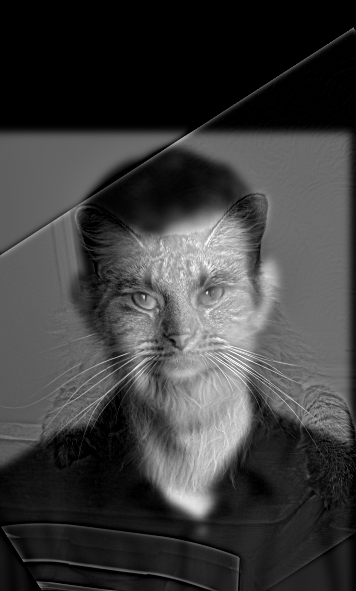
I flipped Rumi horizontally so both faces point the same way, and the matching purple backgrounds end up helping a lot. σ 3 / 8. Their heads are tilted differently though, so while the eyes line up, the mouths and chins are slightly off.
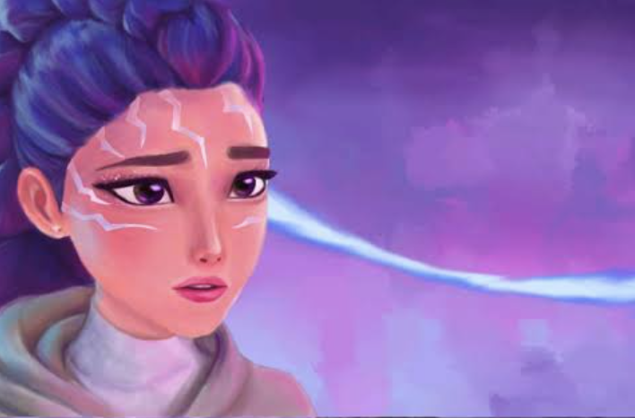
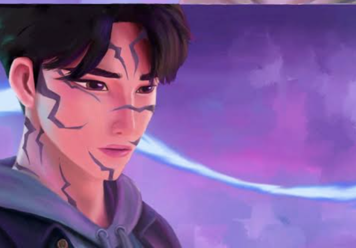
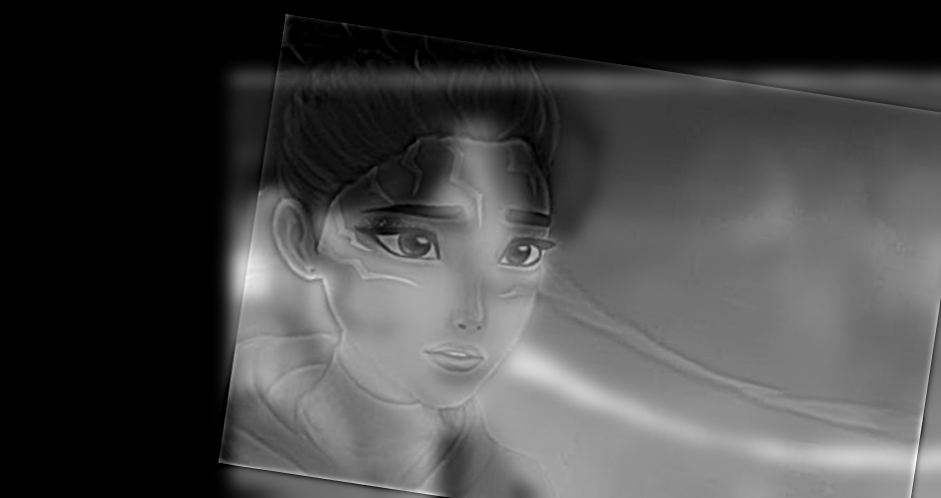
Color barely shows up in the high frequencies (it lives in the low ones instead), so it strengthens the Glinda/Elphaba effect but mostly just looks pretty on Rumi/Jinu, who already share a purple palette.
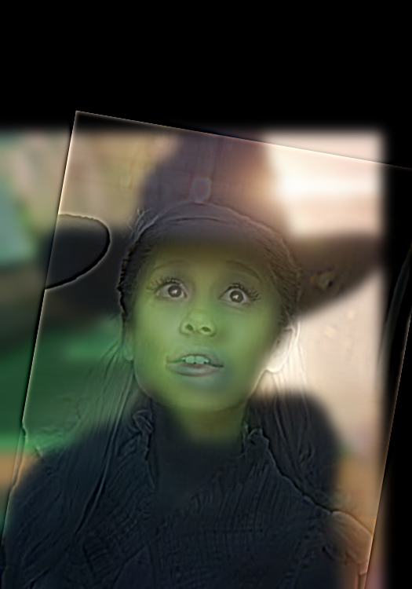
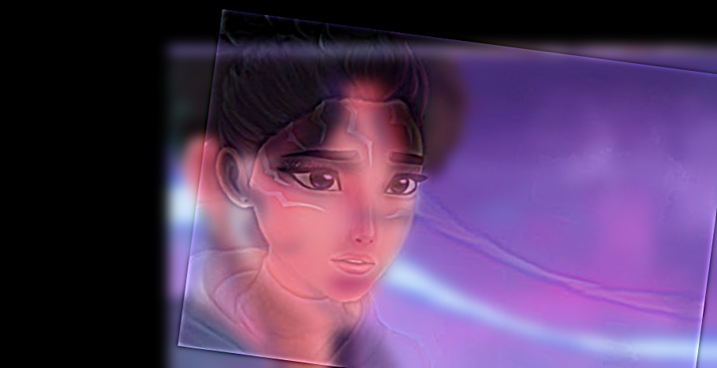
Part 2.3: Gaussian and Laplacian Stacks
For the Gaussian stack, level 0 is the original, and each next level blurs the previous one with the same Gaussian (σ 6): 5 levels, no downsampling, each color channel separately, no built-in pyramid functions. The Laplacian stack is $L_i = G_i - G_{i+1}$, with the blurriest Gaussian level as the last level, so adding every level back together gives the original exactly. Levels 1-3 end up looking pretty similar, b/c repeating the same blur adds less and less new blur each time (a pyramid effectively doubles the blur every level instead).
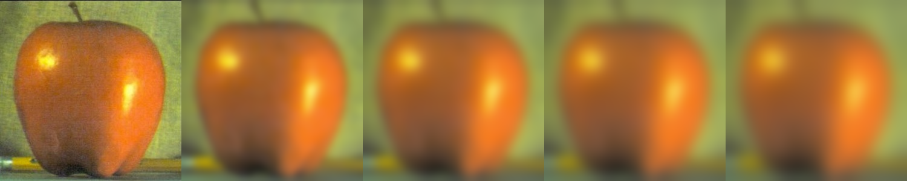
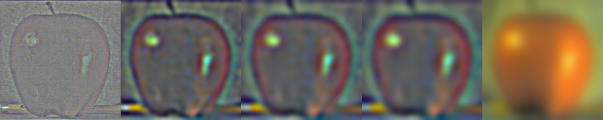
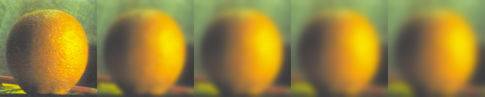
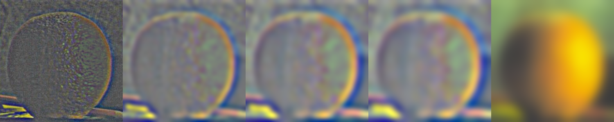
The mask is just the left half set to 1, with its own Gaussian stack. Each row shows levels 0, 2, 4 of apple × mask, orange × (1 − mask), and their sum, and the last row adds all the levels together. I went with σ 6 b/c σ 2 left level 4 too sharp, which made the final seam obvious.
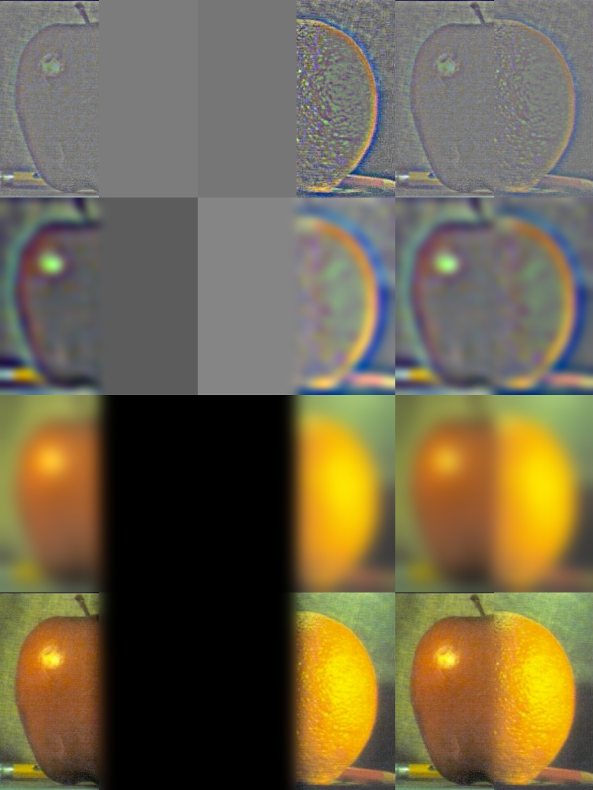
Part 2.4: Multiresolution Blending
At each level, I compute $L_{\text{apple}} \cdot G_{\text{mask}} + L_{\text{orange}} \cdot (1-G_{\text{mask}})$, then add all the levels together. The mask gets blurrier at coarser levels, so big features like color and shading blend over a wide area while fine detail switches over a narrow one, which gives a smooth seam. Without the blurred mask (the method on page 230 of the paper), an abrupt seam would stay visible at every level.
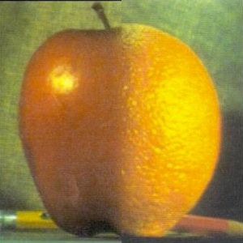
I used a circle mask, radius 130, drawn with cv2.circle, and resized the cookie to match the moon's size. There's a tradeoff I noticedin the radius: 120 left a thicker moon rim, while 130 fills more of the moon but adds a faint white glow, since at coarse levels the blurred mask reaches past the cookie into its white marble-like background.
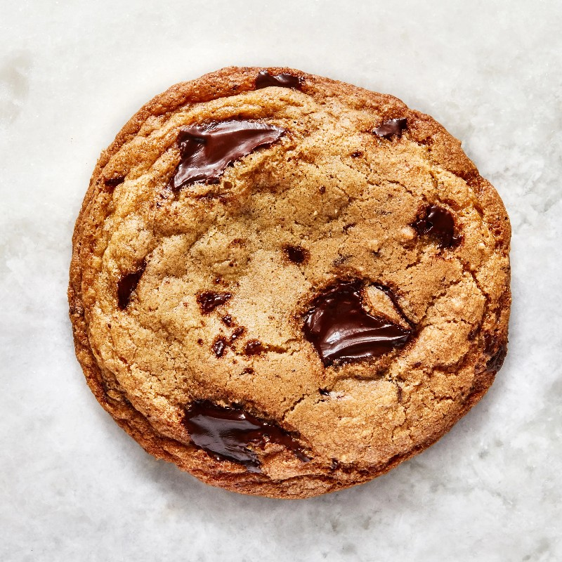
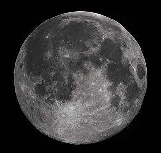
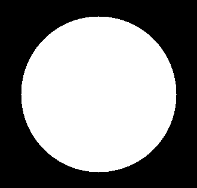
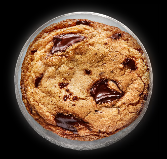
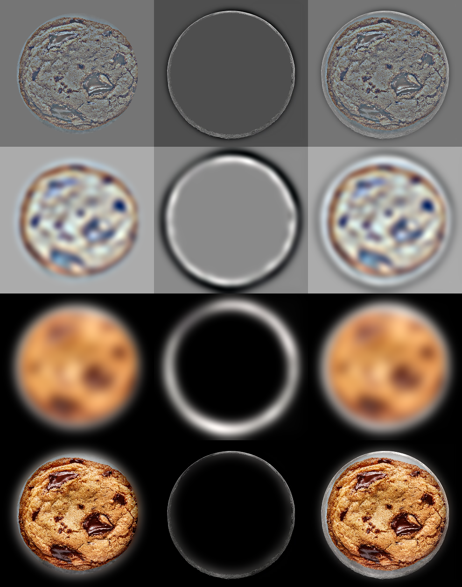
Left is the cookie masked, middle is the moon masked (the ring), and right is the two combined. The mask edge is sharp at level 0 and very soft by level 4.
The cookie and moon didn't blend that well with a straight seam, as I noticed that the colors, textures, and backgrounds (white vs black) are too different, and at the finest level the mask isn't blurred, so the texture switches right at the line. Blending smooths the transition, but it doesn't hide content that different. So I tried lemon/lime instead, which came out way better, probably because of matching white backgrounds and similar peel texture. The fruits still aren't the exact same size or shape (the lime is a bit bigger in its photo), which shows up as small steps at the top and bottom of the seam, but still better!
Most Important Thing I Learned
For hybrids and blends, I learned that choosing the images matters as much as the algorithm. Matching backgrounds, palettes, and shapes did more for the final result than any parameter I tuned :0